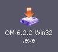

OpenMusic DocumentationHiérarchie de section : OM 6.6 User Manual > System Configuration and Installation > Windows
OpenMusic DocumentationHiérarchie de section : OM 6.6 User Manual > System Configuration and Installation > Windows
Navigation : page précédente | page suivante
Attention, votre navigateur ne supporte pas le javascript ou celui-ci à été désactivé. Certaines fonctionnalités de ce guide sont restreintes.
Windows
System Configuration
OM currently runs on Windows XP/Vista/7.
Installation
Procedure
Double click on the executable file icon to launch the installer. |

|
Installation Folder
The OM default installation folder is |

Installed Items
Application, Libraries and Fonts
The following elements will be installed in the OM
|

{kind=link}
{kind=link}
Musical fonts will be installed in C:/Windows/Fonts.
- omicron.ttf
- omheads.ttf
- omextras.ttf
- omsign.ttf
Shortcuts
Two shortcuts are created when installing OM :
The |
{kind=link}
External Applications
External applications compatible with OM on Mac OS are not available on Windows.
Uninstallation
Use the executable file that was created in the |
Références :
Library
A library is a set of tools, or framework, used by an application – like OM – to execute specific tasks.
Navigation : page précédente | page suivante
A propos...(c) Ircam - Centre Pompidou